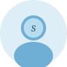

Aquarelle｜水色界隈デジタルグッズLP
水色界隈向けデジタルグッズの架空ショップLP。ガラスモーフィズム×泡アニメ×透明感レイアウトで水色の空気感を実装。
- 想定水色界隈・透明感好き・推し活ユーザー
- 担当構成 / デザイン / 実装
- 技術HTML / CSS / JavaScript / Vercel
Works
水色界隈向けデジタルグッズの架空ショップLP。ガラスモーフィズム×泡アニメ×透明感レイアウトで水色の空気感を実装。
地雷×天使モチーフの架空グッズブランドLP。界隈のトンマナ（色・フォント・世界観）をFigma設計なしで直接実装したデモ。
INTP/INFP/ENTP/ENFPのNe持ち向け。Seが弱くて「今ここ」に着地できない構造的な問題をゴール宣言×タイマー×アイデア駐車場で補う。
推し活の記録をログとして積み上げるWebアプリ。地雷×天使の配色で界隈感を再現。
個人エステサロン向けLPのデザイン演習。明朝体と余白で高級感を演出。
訪問看護ステーション向けLPの設計演習。読みやすさと安心感を重視。
HTML/CSSのみで制作した静的バナーとCSSアニメーションのサンプル集。
Services
Figmaで設計し、HTML/CSS/JSで実装。界隈向けや女性向けサービスのLPを、スマホ最適化した状態で公開できる形まで整えます。
地雷・天使・水色界隈の「らしさ」を、感覚ではなく色・フォント・余白で言語化します。SNS画像・バナー・アイコン・LP背景など、世界観を再現した形で納品します。
Claude CodeやFigma MCPを使った制作フローで動いています。「界隈っぽさ」をシステムとして整理・再現することが得意です。
対応範囲
対応外
About

「界隈っぽい」を感覚で終わらせず、色・フォント・空気感をFigmaで再現できる形に整理します。
地雷・天使・水色界隈の世界観が好きで、その「らしさ」をFigmaとAIで形にしています。
「なんかAIっぽい」と言われるデザインは、たいてい技術の問題ではなく意思の問題です。地雷系の黒とくすみピンクは、ただ可愛いから使うのではなく、その界隈に生きている人の感覚から来ている。意思と文脈が先にあれば、ツールがAIでもFigmaでも、デザインはちゃんとその人のものになる。
通話なし・テキスト中心・非同期で進めます。「こんな雰囲気にしたい」という参考画像や界隈名だけでも大丈夫です。
Flow
CrowdWorksからメッセージをください。界隈・雰囲気・参考画像など、ざっくりでも大丈夫です。
内容を確認して、対応可否と概算をテキストでご連絡します。
トンマナ・構成・コンポーネントをFigmaで組みます。確認しながら進めます。
HTML/CSS/JSで実装し、テキストベースで認識を揃えながら仕上げます。
公開できる形でお渡しします。軽微な修正は納品後も対応します。
Contact
界隈系デザイン・LP制作・Webページ制作のご相談を受けています。
初回のご相談は CrowdWorks からお願いします。内容確認後、対応可否と概算をご案内します。
目安
内容によって個別見積もりになります。まずはお気軽にご相談ください。
相談テンプレ（そのままコピーして使えます）
作りたいもの： 雰囲気・参考画像： 希望時期： 予算感：